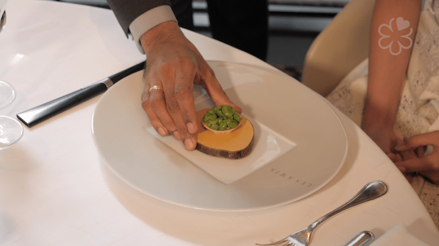

法國飲食文化
法國人就餐非常講究禮儀，一般用長條型餐桌，男女主人各坐餐桌兩頭，
家中其他成員或客人在餐桌兩旁按從女主人一側向男主人一側重要程度遞減方式排列，餐具使用各種不同形狀的餐刀、
叉子和勺子，用餐盤就餐，桌面上只能存在一道菜，撤去前一道才能上第二道，但餐具根據本次用餐情況全部擺放到就餐人餐盤兩側，
由外側往內側使用。一般第一道菜是開胃濃湯（soupe），然後是冷盤（hors-d'œuvre），接著才是主菜（plat de résistance），
最後是甜點（dessert），麵包隨時取用，比英美人消耗多。餐前喝利口酒，餐中水產和禽類菜配乾白葡萄酒。肉類菜配乾紅葡萄酒，
法國人消耗葡萄酒較多，幾乎每餐必備，和英美法律也不同，
未成年人也允許飲用葡萄酒。法國人的就餐禮儀已經成為西方宴會的經典模式。

連到第2頁
連到第3頁
連到第4頁
連到第5頁